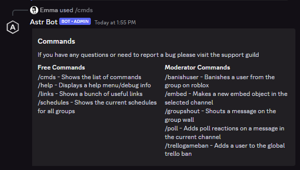
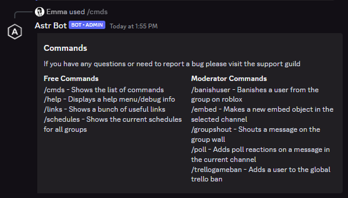
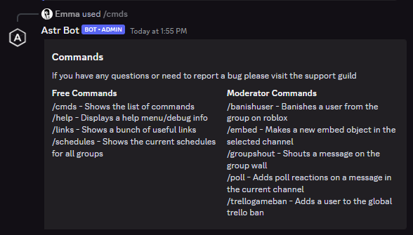

Click one of the buttons below to see parts of my portfolio
Horizon Reactor Core - TEST PLACE
Horizon Reactor Core is a sci-fi, futureistic game on Roblox that allows uses to roleplay in the facility.
This is the test place, where the latest features are published for testing
Astr Discord Bot
Astr is a discord bot designed to help moderate all Horizon Labs Inc games and Discord guilds.
It has advanced features such as global guild banning, live game stats, and Discord -> Roblox banning.

Theatrical Lighting Tech Demo
This game simulates theatrical lighting in real life, using magic sheets and commands to execute light functions.
(This is not a beginner friendly demo and might require explanarion, read the description)
Player lookup
This is an open-source python script that gets a user's ranks in a specific sci-fi Roblox community


 
